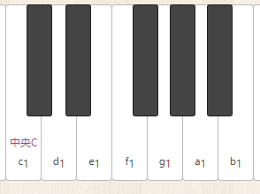

shawn.com
首页
Html5钢琴
在线乐器
物理画线
调音器
节拍器
文章
关于我
登录
感谢访问
设置
电脑键盘映射
MIDI播放
录制功能
吐槽专区
感谢您的访问，当前版本是作者重写过的新版本，以前版本：
由此去👉

shawn.com - 在线钢琴模拟器
../../www.shawn.com/piano
默认的PC电脑键盘映射方案为
黑键
方案，想要纯白键方案的请到
电脑键盘映射
面板进行
设置
点击选择 MIDI(.mid) 文件，或拖动文件到此处。
提示：也可拖入旧版录制功能产生的 .xmid 文件
播放
暂停
停止
0 / 0
开始录制
点击按钮开始录制